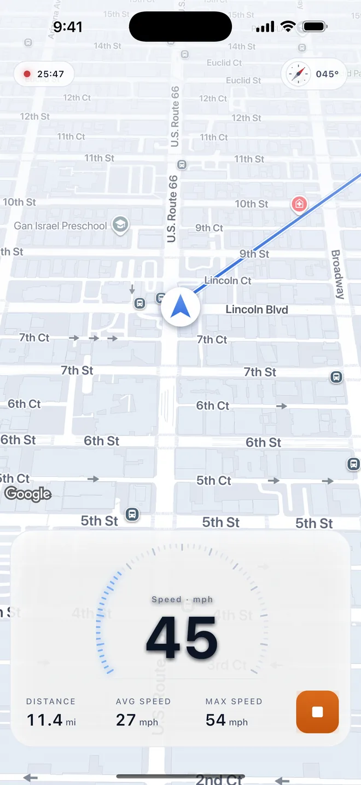
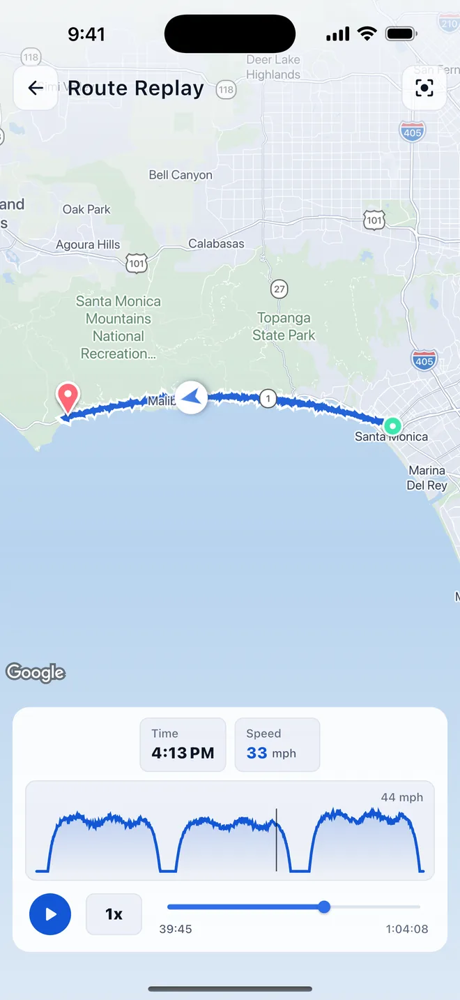
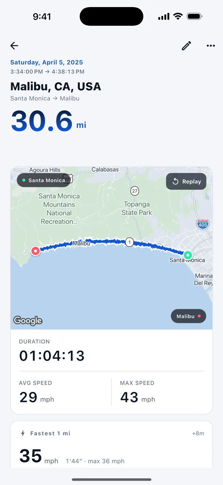
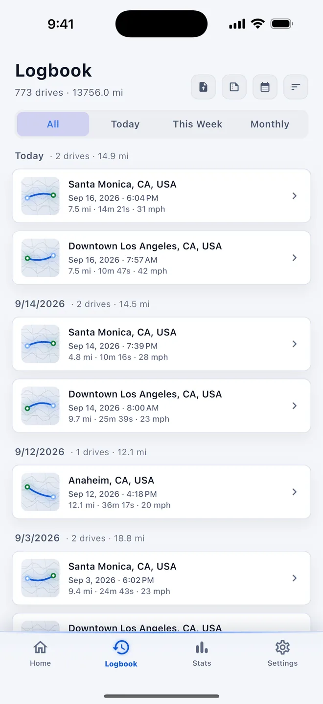
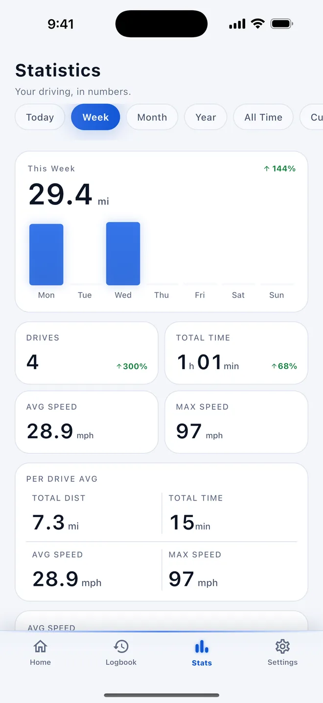
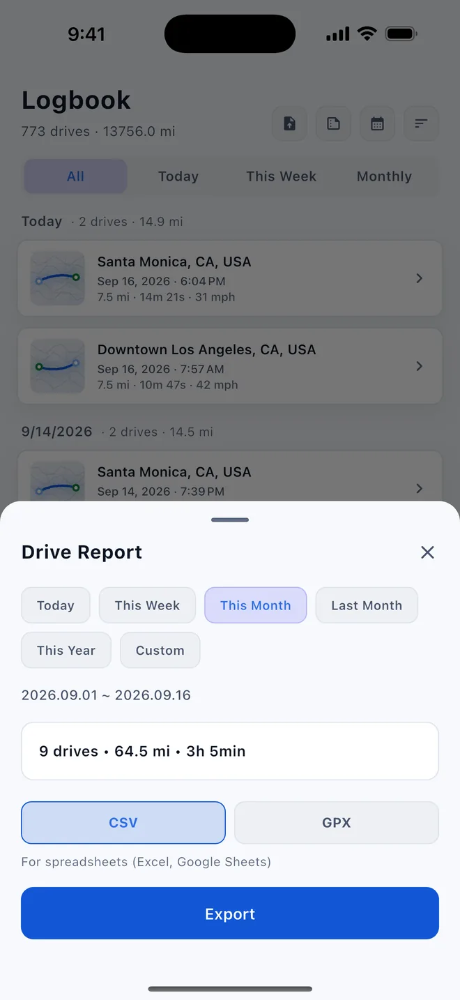
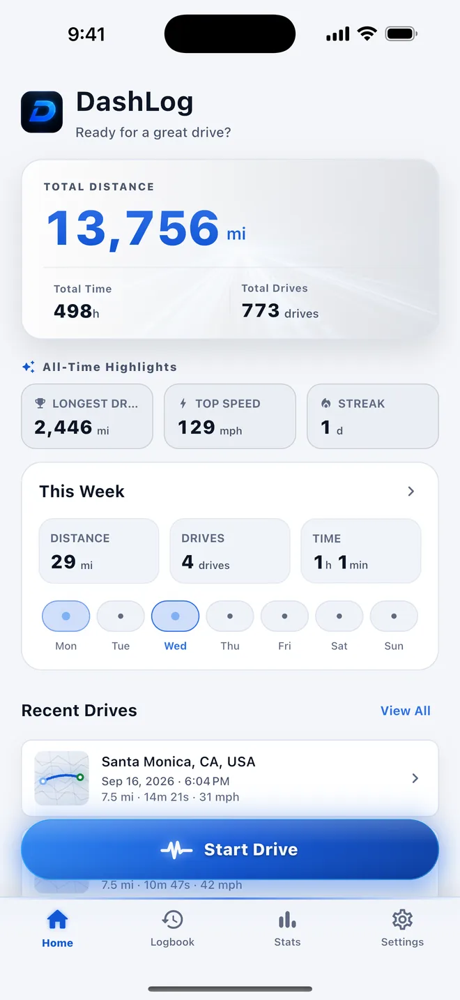
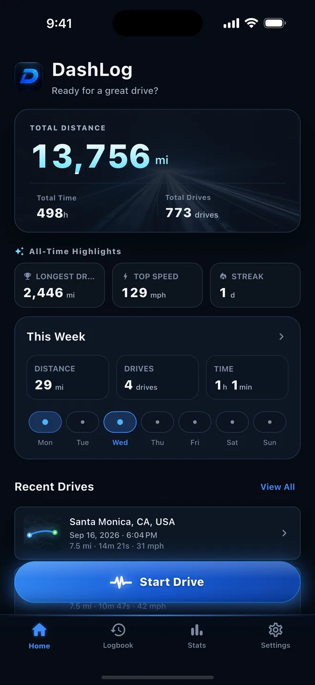

Connect CarPlay or your car's Bluetooth and DashLog starts and stops on its own. Route, speed, distance, and stats are saved for every drive.
DashLog records only what matters — verified GPS data. No driving score hype, no AI guesses.

Connect CarPlay or your car's Bluetooth and recording starts and stops hands-free. Set it up once — a Shortcuts automation on iPhone, or pair your car on Android. Prefer to decide yourself? Start and stop with a single tap.

Watch the route again with speed and time along the way. Scrub the timeline to jump to any moment — the scenic stretch, the twisty bit, the long way home.

Distance, duration, average and top speed, and where you went, all on one screen. Each drive becomes a complete record the moment it ends.

Browse every drive by date with distance, time, and a route preview. Narrow it to today, this week, or a month, and tap any entry for the full details.

Today, this week, this month, this year, or all time: distance, drives, time, and speed with clear charts and the change from the previous period.

Export a single drive, or pick a period — today, this week, this month, last month, this year — and save it as one report. GPX tracks from other apps can be imported too.

Total distance, all-time highlights, this week's activity, and recent drives in one clean view. Open the app and see how far you've come.

DashLog follows your system appearance, or pick light or dark in Settings.
No account. Set it up once, and every drive logs itself.
Pair your car's Bluetooth on Android, or add a CarPlay or Bluetooth automation in Shortcuts on iPhone. The in-app guide walks you through it.
Recording starts when your phone connects to the car and stops when it disconnects. No taps needed.
Each drive lands in your logbook with its map, stats, and speed chart, ready to replay or export.
The essential details about the app, stated plainly.
Direct answers about recording, privacy, and availability.
DashLog is a free GPS drive tracker and drive journal for iOS and Android. It records your route, distance, speed, and stats automatically when your phone connects to CarPlay or your car's Bluetooth, or when you tap Start.
No. DashLog does not require an account or sign-up. You can open the app and begin recording a drive.
For each recorded trip, DashLog saves the GPS route, distance, duration, speed, altitude, and related drive statistics.
Drive records are stored locally on your device. Read the DashLog Privacy Policy for details about app data and diagnostics.
Yes, after a one-time setup. Recording starts when your phone connects to CarPlay or your car's Bluetooth and stops when it disconnects. On iPhone you set this up once as a Shortcuts automation (the app includes a guide); on Android you pair your car's Bluetooth once in the app. Location access must be set to Always. You can also start and stop a drive yourself with one tap.
Yes. Export a single drive as GPX or CSV, or export a whole period (today, this week, this month, last month, or this year) as one report. You can also import GPX files from other apps.
Yes. DashLog is available on both the Apple App Store and Google Play.
No. DashLog is currently free to download and use, with no subscription required.
Questions, bug reports, or feature ideas — drop us an email and we'll get back to you.